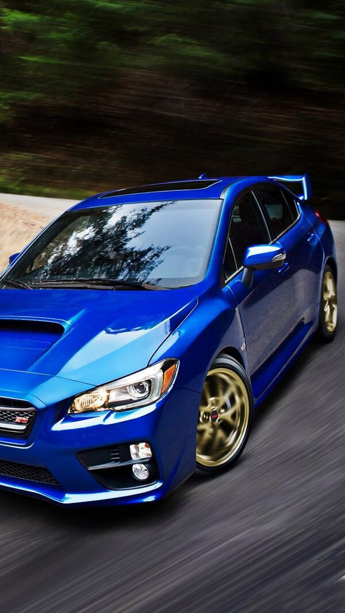
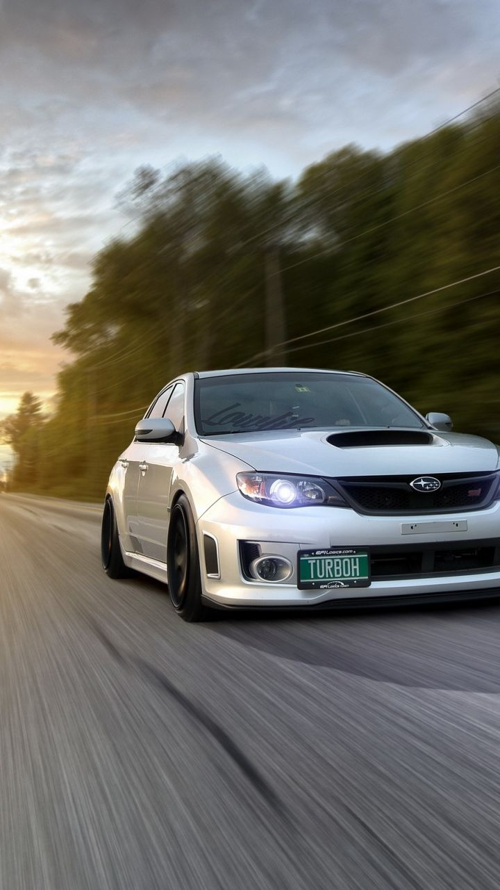

<!--
  Generated template for the EligeCarroPage page.

  See http://ionicframework.com/docs/components/#navigation for more info on
  Ionic pages and navigation.
-->
<ion-header>

   <ion-navbar color="dark">
    <ion-title>Elige Carro</ion-title>
  </ion-navbar>

</ion-header>


<ion-content padding>

  <ion-list>

    <ion-item>
      <ion-avatar item-start>
        
      </ion-avatar>
    Juan Alberto Balt. 
      <button ion-button outline item-end (click)="goToPage('origenMap')">Elegir</button>
    </ion-item>
    <!-- Item with a thumbnail on the right -->
    <ion-item>
      <h2>Nissan Sentra 2018 Rojo</h2>
      <p>"Excelente conductor"</p>
      <ion-thumbnail item-end>
        
      </ion-thumbnail>
    </ion-item>
  </ion-list>

  <ion-list>
    <!-- Item with an avatar on the left and button on the right -->
    <ion-item>
      <ion-avatar item-start>
        
      </ion-avatar>
      Mario Darío Benabides
      <button ion-button outline item-end (click)="goToPage('destinoMap')">Elegir</button>
    </ion-item>

    <!-- Item with a thumbnail on the right -->
    <ion-item>
      <h2>Atos 2017 Verde</h2>
      <p>"Maneja con cuidado"</p>
      <ion-thumbnail item-end>
        
      </ion-thumbnail>
    </ion-item>

  </ion-list>

  <button ion-button block color="primary">Elegir al más cercano</button>

</ion-content>
